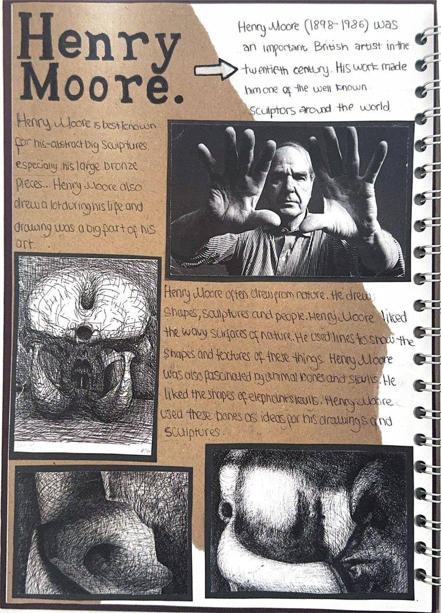
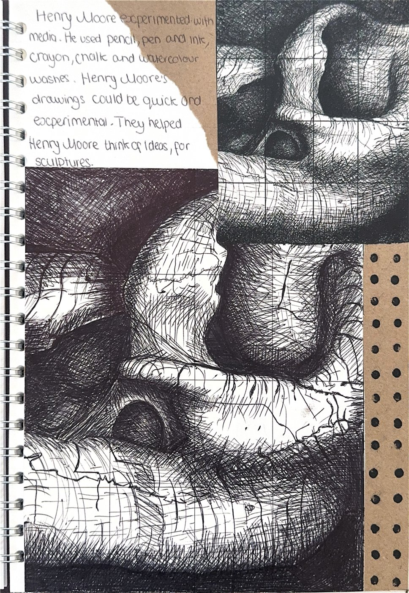
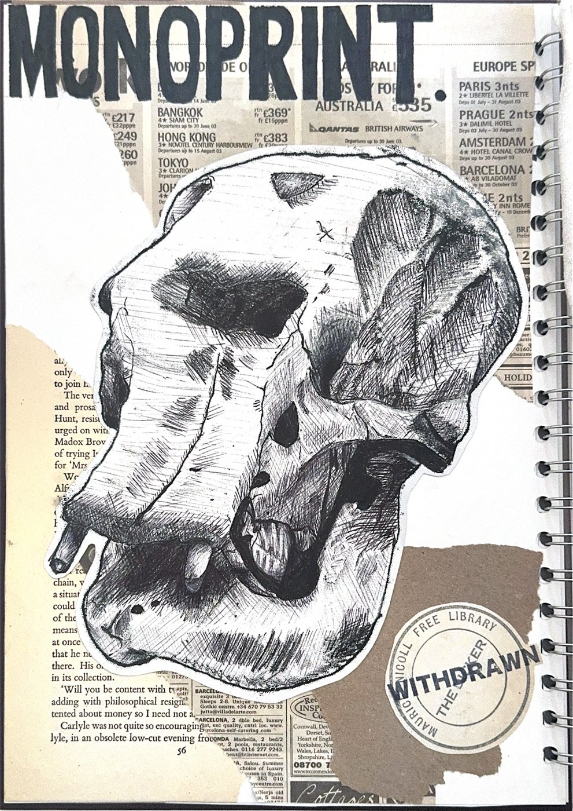
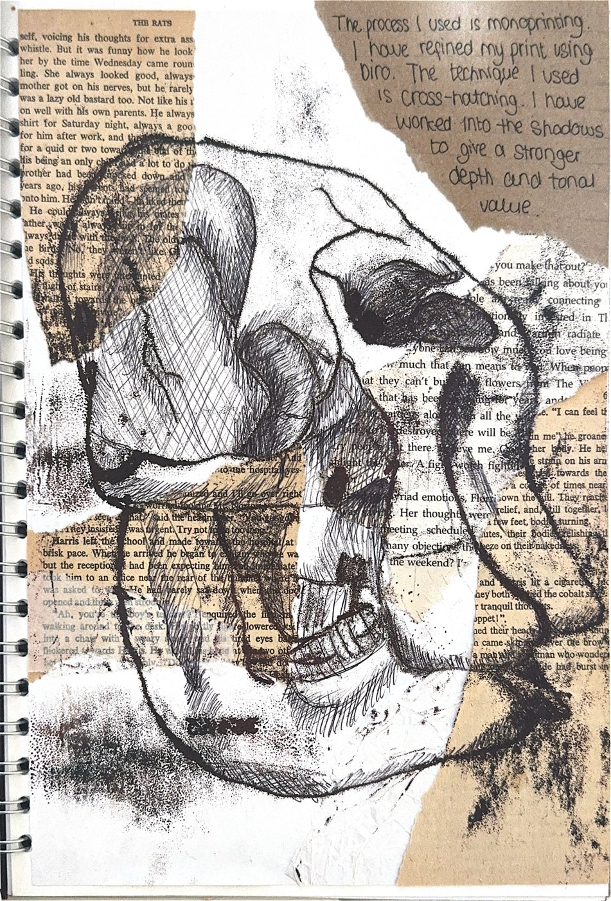

PORTFOLIO EDITION • 2026
✒️
SKETCHBOOK
Margarita Gladky
Fine Art Studies: Henry Moore Sculptural Forms, Monoprinting & Biro Cross-Hatching Techniques.
Fine Art Studies: Henry Moore Sculptural Forms, Monoprinting & Biro Cross-Hatching Techniques.



